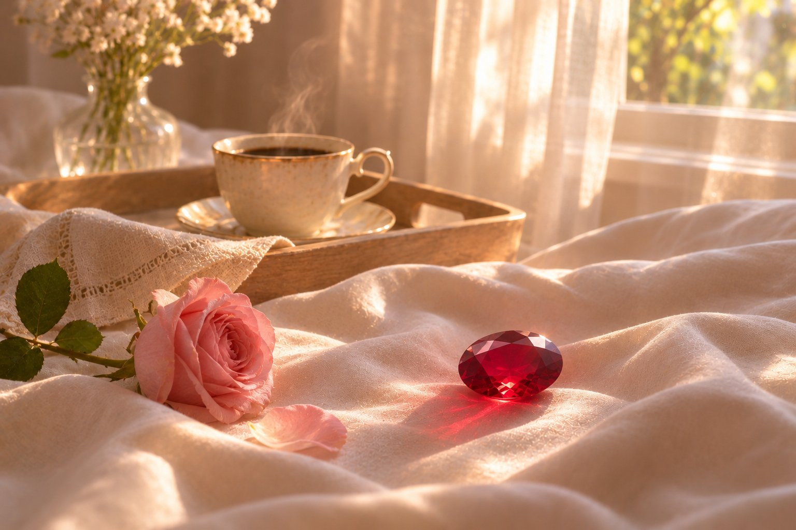

You've already imagined your future apartment, your dream career, and what you'll wear when you finally prove certain people wrong. Meanwhile, one sweet message from your crush can completely ruin your concentration. Capricorn (December 22 to January 19) has a birthstone called ruby, whose deep red tells a rather unexpected story.
The Capricorn everyone knows
Why Does Everyone Think Capricorn Is So Independent?
You're the girl who has a backup plan for her backup plan.
While everyone else is discussing what they might do after graduation, you've already looked at apartments and worked out how much furniture costs.
Your friends ask for advice because you usually have something sensible to say. You're also remarkably good at getting things done when everyone else is panicking.
You've probably finished something difficult and immediately started thinking about the next thing.
The future seems a little less frightening when someone is figuring it out alongside you.
The Capricorn nobody sees
What Is Hiding Behind All That Self-Control?
Secretly, you'd love someone to tell you that you've done enough for today.
You want to be spoiled occasionally. You imagine spontaneous kisses, ridiculous love letters, and someone bringing you flowers on an ordinary Wednesday.
For someone so concerned with being realistic, you have a wonderfully unrealistic romantic imagination.
In George Kunz's 1913 book The Curious Lore of Precious Stones, Capricorn's stone is ruby.
Its deep red mirrors the passionate, affectionate girl behind your carefully composed expression.
There's a surprising amount of romance hiding inside you.
Behind the girl with a plan
Does Capricorn Really Prefer Doing Everything Alone?
Someone tells you that you're intimidating.
You were actually trying to figure out whether they liked you.
Apparently, concentrating has unfortunate consequences for your facial expressions.
You sometimes find it easier to help someone solve a problem than to tell them how much you care.
And when you miss somebody, you might ask whether they finished their assignment instead of admitting it.
People assume your independence means you prefer doing everything alone. They rarely consider how lovely it would feel to have someone offer to take care of you.
When tomorrow can wait
What Do You Dream About Besides Success?
It's 2 a.m. Your plans for tomorrow are neatly written down, but you're imagining a slow Sunday morning with someone you love.
There's coffee, sunlight, and absolutely nowhere you need to be.
You put on a romantic playlist and allow yourself to dream about something that has nothing to do with being successful.
Maybe deep red is the color of everything your sensible little plans have forgotten to include.
You've spent so much time imagining what you'll achieve.
Tonight, imagine someone who's already completely happy with you.

When your red side wants out, Gemflow turns ruby into slow-moving light on your phone, so you can watch your inner color for once.
Ruby is the Capricorn birthstone, a deep red that mirrors the secretly romantic heart hiding inside you.